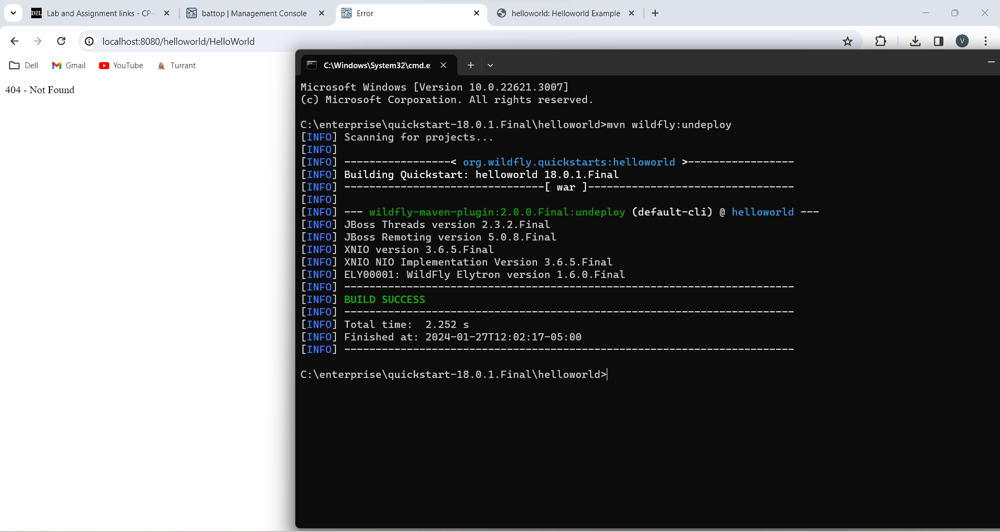
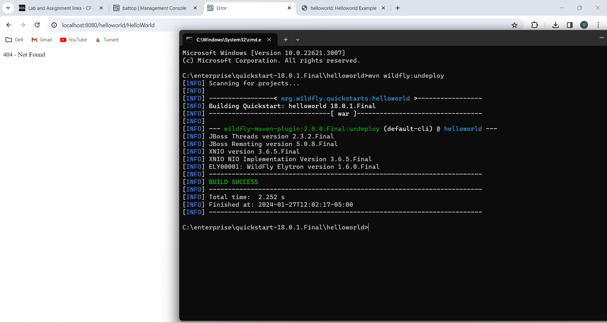
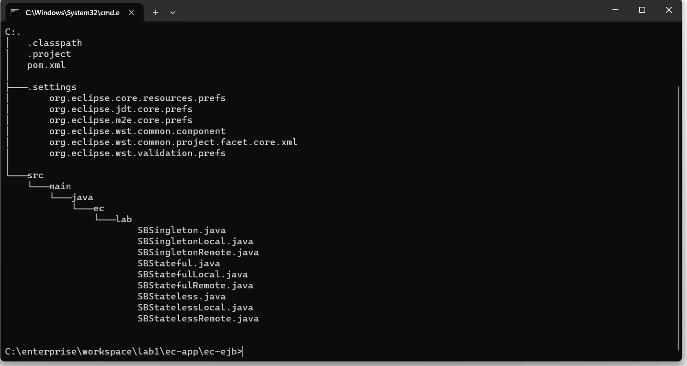
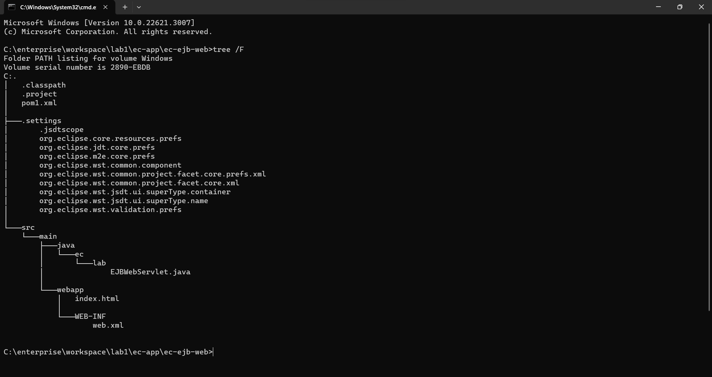

LAB1 Report
Author: Vaibhav Thakur
Date: 01/27/2024
Check readme.txt for course work statement and self-evaluation.
T1 WildFly (JBoss-AS) (lab practice)
T1.1 WildFly installation
Complete? Yes


T1.2 Set users
Complete? Yes
 Set users
Set users
T2 Build and Deploy Applications by Maven (lab practice)
T2.1 Install quickstart projects
Complete? Yes
 Install WildFly quickstart projects
Install WildFly quickstart projects
T2.2 Testing helloworld project
Complete? Yes


 
 
T2.3 Testing ejb-remote project
Complete? Yes
 Test ejb-remote project
Test ejb-remote project
T3 WildFly with Eclipse JEE (lab practice)
T3.1 Eclipse with External WildFly
Complete? Yes
 Eclipse Maven and external JBoss
Eclipse Maven and external JBoss
T3.2 WildFly within Eclipse
Complete? Yes
 Run WildFly within Eclipse
Run WildFly within Eclipse
T3.3 ec-web Maven project
Complete? Yes
 ec-web project
ec-web project
T4 JEE application project (lab practice)
T4.1 ec-app project
Complete? Yes
 ec-app project
ec-app project
T4.2 ec-ejb project
Complete? Yes
ec-ejb project
T4.3 ec-ejb-web project
Complete? Yes
ec-ejb-web project
T4.4 ec-ear project
Complete? Yes
 ec-ear project
ec-ear project
T4.5 ec-app-client project
Complete? Yes
 ec-app-client project
ec-app-client project
T4.6 Deploy ec-ejb with remote access
Complete? Yes
 Deploy ec-ejb with remote access
Deploy ec-ejb with remote access
References
- CP630 lab1